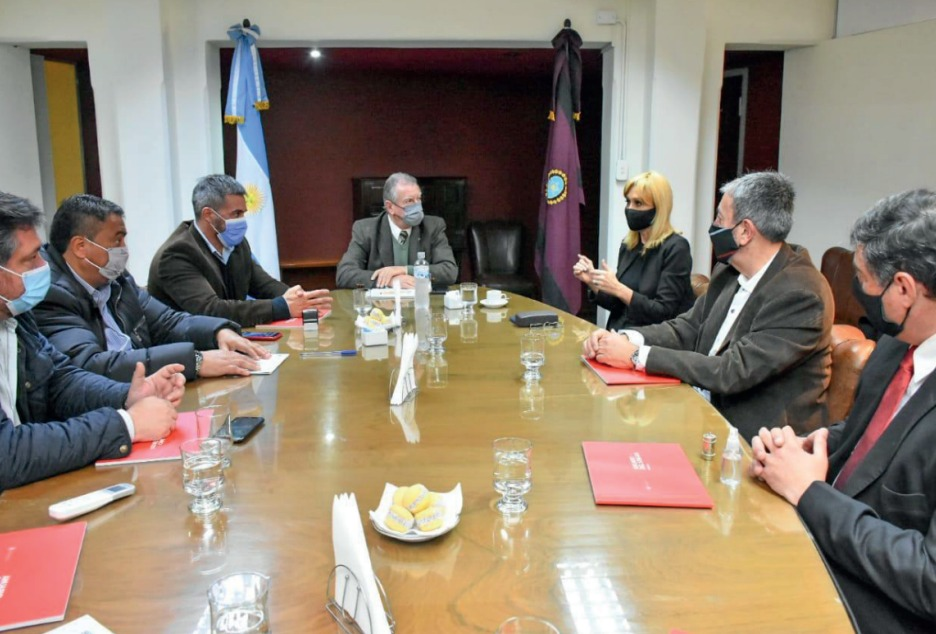

15/07/2021 - 16/07/2021
Paula Martinez
SALTA
Firma de convenio con:
Municipio de San José de Metán representado por el intendente José María Issa Martin.
Municipio de Rosario de la Frontera representado por el intendente Gustavo Solís.
A ambos intendentes se les informo del estado de las pensiones en sus municipios, especialmente los casos de pedido de documentación y faltante de CMO
La Superintendencia de Servicios de Salud sumará oficinas de atención ciudadana en el Noroeste Argentino
La Superintendencia de Servicios de Salud en el marco de avanzar con la federalización de su presencia en el territorio argentino, llevó a cabo la semana pasada, una serie de acuerdos para la instalación y coordinación de oficinas de atención ciudadana en municipios de Salta y Jujuy.
